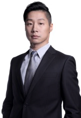

台灣青年的時代任務
立法委員林昶佐 Freddy Lim 演講餐會
各位達拉斯台灣同鄉、朋友們，
台灣立法委員林昶佐先生將在百忙之中蒞臨達拉斯，於八月四日舉行一場演講餐會，主題為「台灣青年的時代任務」，本活動由達福台灣同鄉會主辦，詳細活動時間地點安排請參考如下。

林昶佐 Freddy Lim
1976年2月1日出生於台灣台北。現任台灣第九屆立法委員，以及閃靈樂團主唱與詞曲創作者。曾榮獲金曲獎、總統文化獎以及歐美、日本搖滾雜誌票選全球最佳主唱等。他積極參與人權、環保、文化政策等議題運動，也在立委期間大力推動轉型正義。曾任國際特赦組織台灣分會理事長，2015年創組新政黨「時代力量」。由於其多重身份的特殊性，及所屬的閃靈樂團原具備的國際知名度，林昶佐參選獲得逾百國際媒體報導，成為2016年中央大選最受國際矚目的候選人。並被英國廣播公司 (BBC) 譽為世界第一位進入國會的重金屬搖滾明星(簡介由委員辦公室提供)
Freddy Lim Bio
INFO (活動細節):
WHEN (時間)
: Saturday, 8/4/2018, from 11:45 am-2:30 pm (八月四日星期六)
WHERE (地點)
: Sheraton Dallas Hotel by the Galleria
ADDRESS (住址)
: 4801 Lyndon B. Johnson Freeway, Dallas, TX 75244
SCHEDULE (活動流程):
11:45 AM – 12:00 PM Registration
12:00 PM – 12:30 PM Lunch
12:30 PM – 2:30 PM Speech
Event Fee (收費):
$35
per person- with lunch
$0
per person- without lunch (Please arrive at 12:30 PM)
Donations are welcome and appreciated!
RSVP(報名):
網路報名:
按此
電話報名:
Jean Hwang 682-553-5234、Sam Tsay 469-737-5930 請在七月三十日前報名，以便統計人數(Please RSVP before 7/30/2018)
Donations are welcome and appreciated!